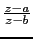

suivant: Le birapport de 4
monter: La division harmonique, pôles
précédent: La division harmonique, pôles
Table des matières
Index
Point divisant un segment dans le rapport k : division_point point_div
point_div a trois arguments : deux points (ou deux nombres complexes
a et b) et un nombre complexe k.
point_div renvoie et dessine le point d'affixe z tel que :
 = k
On tape :
point_div(i,2+i,3+i)
On obtient :
pnt((5+4*i)/(2+i),0) et le dessin de ce point
On tape :
point_div(point(i),point(2+i),3)
On obtient :
pnt(3+i,0) et le dessine de ce point
Remarque : 0 représente la couleur du point.
Documentation de giac écrite par Renée De Graeve